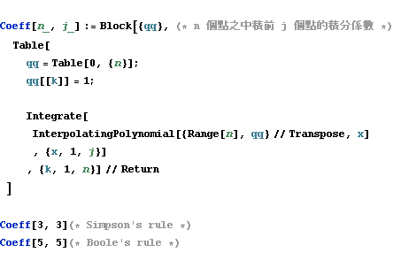
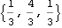
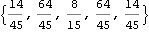
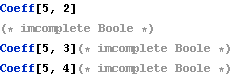
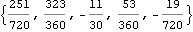
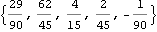
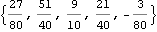
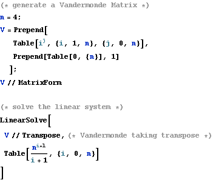
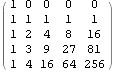

Newton-Cotes Coefficients
Integrating The Lagrange Basis Polynomials







Another Way to Generate Newton-Cotes Coefficients
Thanks to James Keesling.
We have another algorithm to generate Newton-Cotes Coefficients, rather than integrating the basis polynomials.

